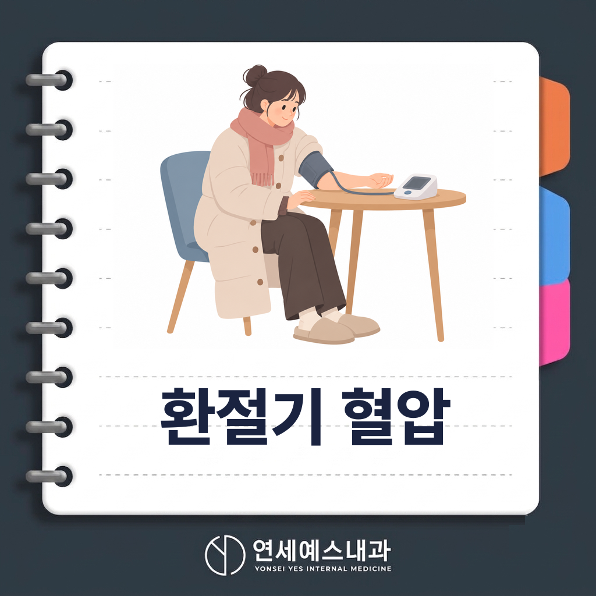
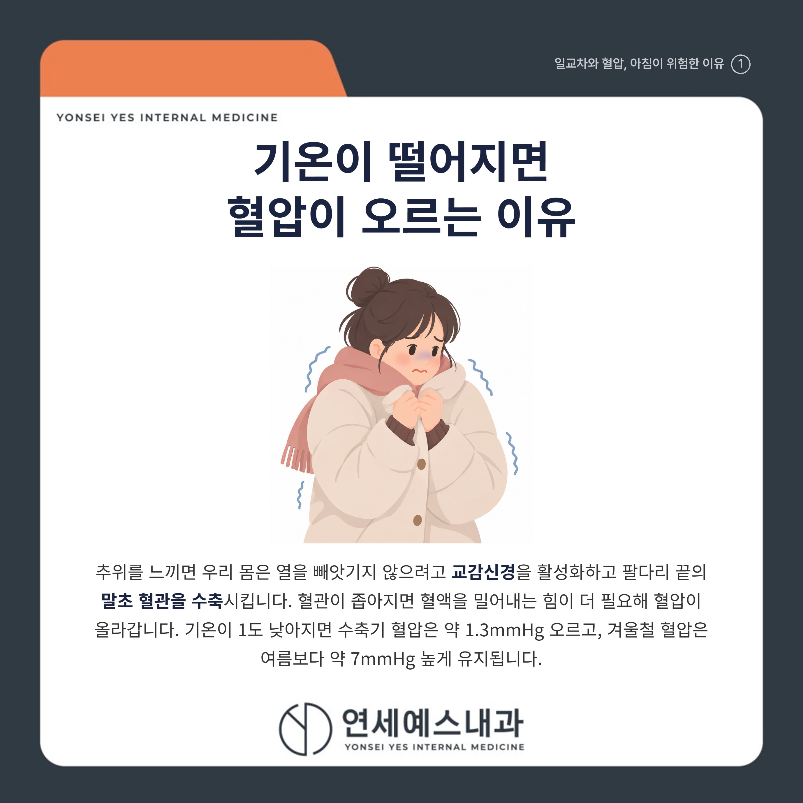
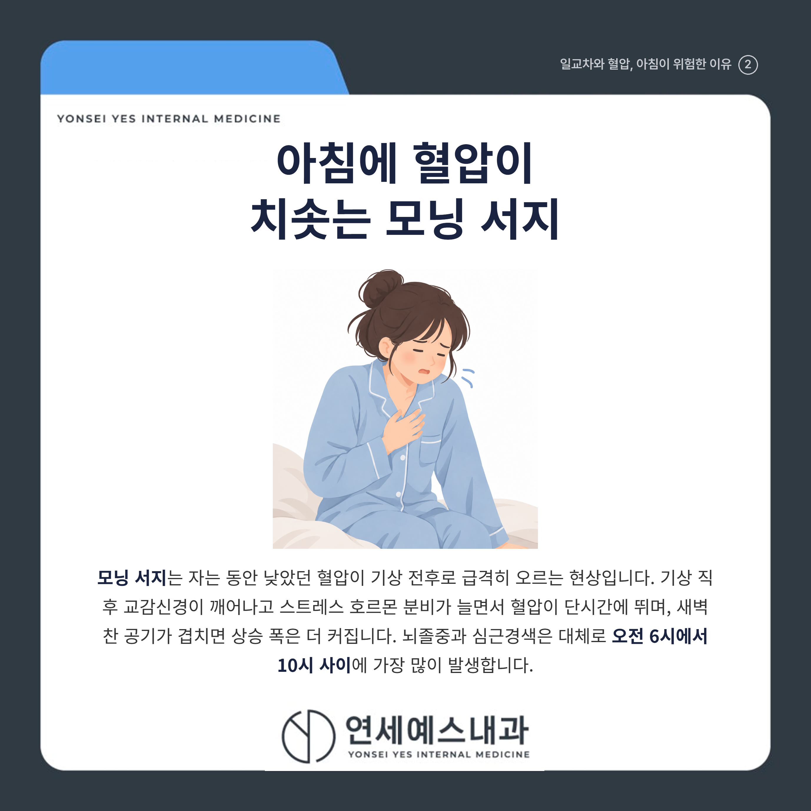
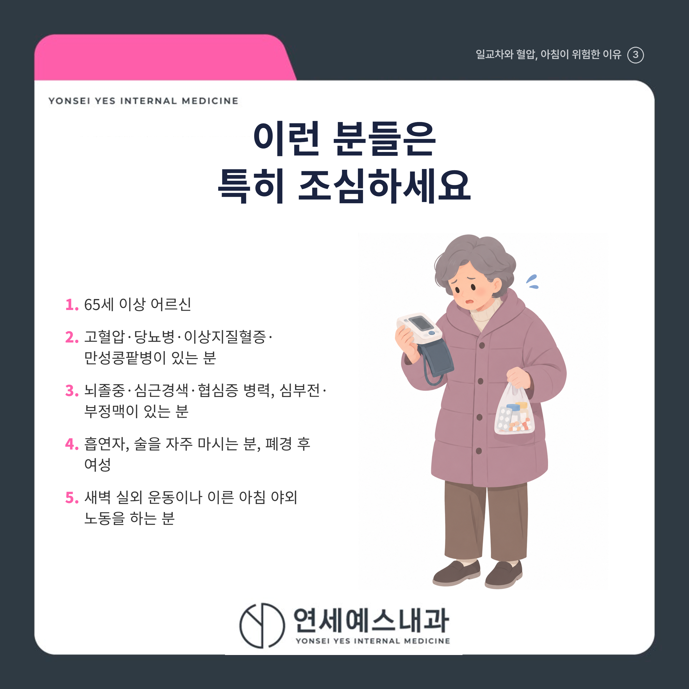
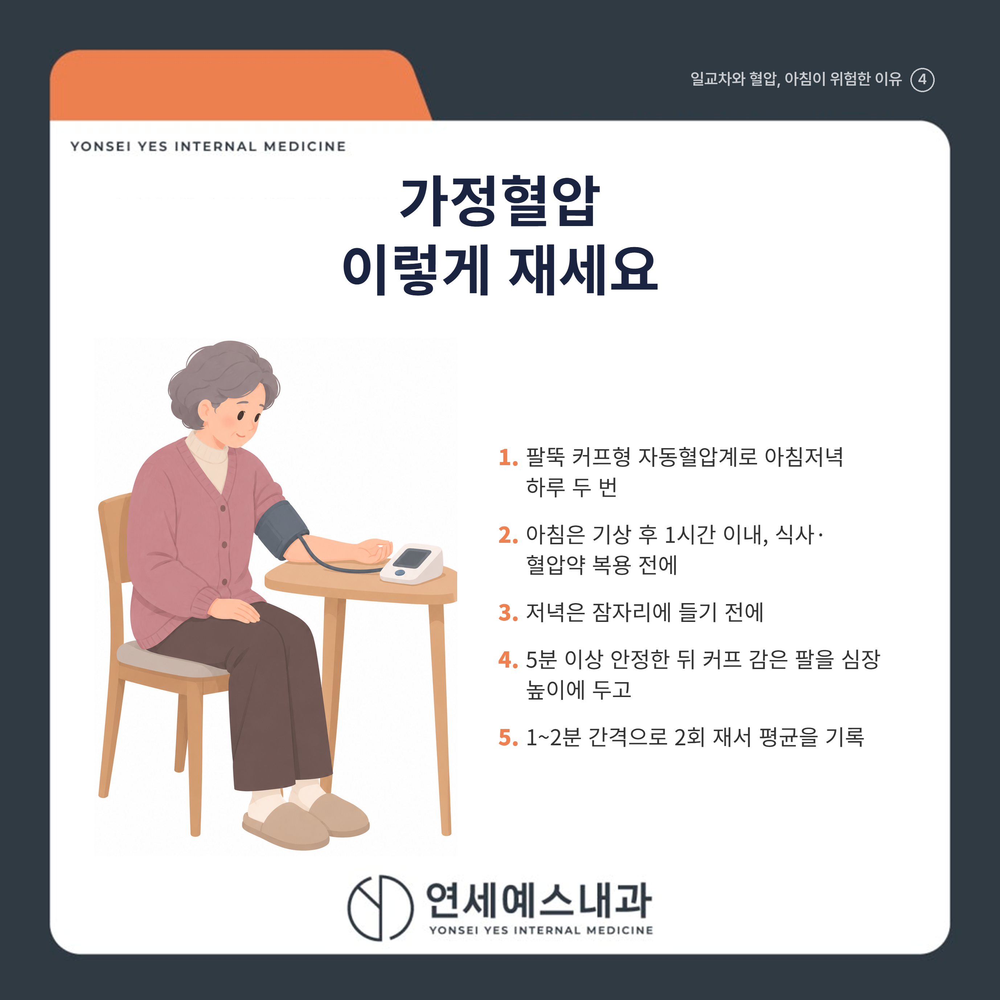

일교차 클수록 혈압이 위험한 이유는?

안녕하세요! 여러분의 건강 주치의 연세예스내과입니다. 😊
아침저녁으로 공기가 부쩍 쌀쌀해지고, 낮과의 기온 차가 10도 넘게 벌어지는 날이 많아졌습니다.
"혈압약만 잘 먹으면 괜찮겠지" 하며 집에서 혈압을 재보지 않는 분들 많으시죠? 하지만 환절기에는 같은 사람도 하루에 몇 번씩 혈압이 출렁입니다.
결론부터 말씀드리면, 기온이 떨어지면 혈관이 수축해 혈압이 오르고, 낮과 밤의 기온 차가 큰 환절기에는 이 오르내림이 하루에도 여러 번 반복돼 심장과 뇌에 부담을 줍니다.
특히 잠에서 깬 직후 2~3시간은 혈압이 가장 가파르게 치솟는 시간대라, 이불 속에서 스트레칭한 뒤 천천히 일어나고 찬 공기에 갑자기 노출되지 않는 것이 중요합니다. 아래에서 그 이유와 가정혈압 재는 법, 병원에 가야 할 신호를 하나씩 짚어 드리겠습니다.
1. 🌡️ 기온이 떨어지면 혈압이 오르는 이유

추위를 느끼면 우리 몸은 열을 빼앗기지 않으려고 교감신경을 활성화하고, 팔다리 끝의 말초 혈관을 수축시킵니다.
혈관이 좁아지면 혈액을 밀어내는 힘이 더 필요해 혈압이 올라갑니다. 기온이 1도 낮아질 때 수축기 혈압은 약 1.3mmHg 오르고, 겨울철 혈압은 여름보다 수축기 기준 약 7mmHg 높게 유지되는 것으로 인용됩니다.
추위는 혈액을 끈끈하게 만들어 혈전(피떡)이 생기기 쉬운 환경도 만듭니다. 기온이 1도 내려갈 때마다 심뇌혈관질환 사망 위험은 약 1.6% 높아진다는 추정도 있습니다.
2. ⏰ 아침 혈압이 갑자기 치솟는 모닝 서지

모닝 서지(morning surge)란 자는 동안 낮았던 혈압이 기상 전후로 급격히 오르는 현상을 말합니다.
기상 직후 교감신경이 깨어나고 스트레스 호르몬 분비가 늘면서 혈압이 단시간에 뜁니다. 여기에 새벽 찬 공기가 겹치면 상승 폭은 더 커집니다.
과도한 모닝 서지는 24시간 평균 혈압과 상관없이 뇌졸중 위험을 높입니다. 수면 중 최저치 대비 아침 상승 폭이 10mmHg 커지면 뇌졸중 위험이 약 22% 늘었다는 연구도 있습니다.
뇌졸중과 심근경색은 대체로 오전 6시에서 10시 사이에 가장 많이 발생합니다. 잠에서 깨면 이불 속에서 가볍게 스트레칭한 뒤 천천히 일어나고, 찬물 세수나 급한 외출, 배변 시 과도하게 힘주는 행동은 피하세요.
3. ❤️ 이런 분들은 특히 조심하세요

일교차에 따른 혈압 변동과 심뇌혈관 위험이 특히 큰 분들입니다.
[ ] 65세 이상 어르신
[ ] 고혈압, 당뇨병, 이상지질혈증(고지혈증), 만성콩팥병이 있는 분
[ ] 뇌졸중, 심근경색, 협심증 병력이 있거나 심부전, 부정맥이 있는 분
[ ] 흡연자, 술을 자주 마시는 분, 폐경 후 여성
[ ] 새벽에 실외 운동을 하거나 이른 아침 야외에서 오래 일하는 분
해당되는 항목이 있다면 환절기에는 가정혈압을 더 자주 확인하고, 무리한 새벽 활동을 줄이는 것이 좋습니다.
Q. 가정혈압, 어떻게 재야 정확할까요?

팔뚝(상완) 커프형 자동혈압계로 아침저녁 하루 두 번 재는 것이 기본입니다. 집에서 잰 평균이 135/85mmHg 이상이면 고혈압으로 봅니다.
아침에는 기상 후 1시간 이내에 소변을 본 뒤, 아침 식사와 혈압약 복용 전에 재고, 저녁에는 잠자리에 들기 전에 잽니다.
등받이 의자에 5분 이상 앉아 안정한 뒤, 다리를 꼬지 않고 커프 감은 팔을 심장 높이에 둡니다. 1~2분 간격으로 2회 재서 평균을 기록하세요.
특정 날의 높은 값 하나보다 여러 날 평균과 추세가 더 중요합니다. 날짜와 시각, 모든 값을 적어 두었다가 진료 때 가져가면 약 조정에 큰 도움이 됩니다.
🚑 언제 병원에 가야 하나
아래 증상은 뇌졸중이나 심근경색의 조기 신호일 수 있습니다. 하나라도 갑자기 나타나면 시간을 지체하지 말고 즉시 119에 연락하세요. 증상이 잠깐 나타났다 사라져도 반드시 진료를 받아야 합니다.
[ ] 한쪽 팔다리에 힘이 빠지거나 마비되고, 얼굴 한쪽이 처진다
[ ] 갑자기 말이 어눌해지거나 상대의 말을 이해하지 못한다
[ ] 한쪽 눈이 안 보이거나 시야가 좁아지고, 극심한 두통과 어지럼증이 생긴다
[ ] 가슴 한가운데를 쥐어짜는 듯한 통증이 턱, 목, 왼팔, 등으로 퍼진다
[ ] 식은땀, 호흡곤란이 가슴 통증과 함께 나타난다
심근경색과 뇌졸중은 발병 후 처음 몇 시간의 대응이 예후를 좌우합니다. "조금 쉬면 낫겠지" 하고 기다리지 마세요.
✅ 환절기 혈압 관리 생활수칙
| 상황 | 핵심 행동 |
|---|---|
| 외출 | 옷을 여러 겹 입고 모자, 목도리, 장갑으로 보온 |
| 운동 | 이른 새벽 대신 해가 뜬 낮 시간에, 준비운동 충분히 |
| 기상 | 이불 속 스트레칭 후 천천히 일어나기 |
| 실내 | 적정 온도로 난방하고 실내외 온도 차 줄이기 |
| 수분 | 따뜻한 물을 자주 마셔 탈수 예방 |
| 약 | 겨울에 혈압이 올라도 임의로 중단, 감량하지 말고 진료받기 |
혈압약은 계절에 따라 용량 조정이 필요할 수 있으니, 아침 혈압이 높거나 변동이 크면 가정혈압 기록을 들고 진료받아 보세요.
"오늘 아침 재본 혈압 한 줄이 겨울철 뇌졸중을 막는 첫걸음입니다."
일교차가 커지는 환절기에 혈압이 불안정하다면 참지 마시고, 가까운 내과에서 전문의와 상담해 보시기 바랍니다.
※ 모든 치료 및 예방접종은 개인의 상태에 따라 발열, 통증, 알레르기 반응 등의 부작용이 나타날 수 있으므로, 반드시 의료진과 충분한 상담 후 진행하시기 바랍니다.
연세예스내과에서 전해드리는 건강 정보였습니다. 오늘도 건강하고 평안한 하루 보내세요!

#일교차혈압 #모닝서지 #가정혈압측정 #주안내과 #주안의원 #주안내과의원 #주안역내과 #주안역의원 #주안역내과의원 #시민공원역내과